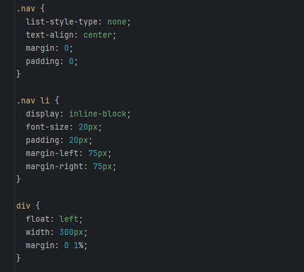

The Benefits of Bootstrap
05 Oct 2023Introduction
Many would say that using purely HTML and CSS (with no frameworks) to build a website is a tedious task. You have to write quite a few lines just to accomplish “simple” tasks such as trying to place items in columns or resize elements. Such is the reason that frameworks exist in the first place—to make the process of web design easier for the developer and provide basic tools that would otherwise have to be created from scratch. Having recently learned at least the basics of Bootstrap, I would say that though its many features can make it seem somewhat complex, it is useful to have implemented.
HTML & CSS
Though it certainly isn’t impossible, using purely HTML and CSS can be difficult. Perhaps, not in terms of overall complexity—in fact, I would say the simplicity of HTML and CSS only makes it much easier to understand all the tools at your disposal—but rather the amount of attributes you must string together to achieve a simple effect. For instance, take the website built without any frameworks below:

Just creating the navigation bar at the top of the page and splitting the three columns requires you to write three classes, assigning them to different divs and elements in order to achieve the necessary effects.

Certainly not a complex website, but still a decent amount of styling to achieve such common elements, an attribute which is multiplicative for larger and more complex projects.
Bootstrap
Later, I would remake this same website in Bootstrap, with an exactly identical look. Yet it required much less CSS, only two classes to color elements that were included in the other file as well, classes that could easily be moved to style attributes in the HTML file since they are so short.
This is one of the benefits of using a framework; instead of having to create custom classes for common tasks like inlining objects or creating a navbar, you can simply use the premade systems of frameworks like Bootstrap to, say, create three columns that evenly divide the content across the page. This can reduce your development time by allowing you to focus more on creating the website rather than building trivial and common classes.
In this way, frameworks such as Bootstrap are almost like an addition, providing a variety of features to the languages of HTML/CSS. Using it, you can not only avoid having to write and rewrite these classes again and again, but you are also afforded new systems that allow you to create better looking websites (with less effort). Using Bootstrap, I built the following website mockup:

With just HTML and CSS, this might be somewhat of a pain to create; adding the necessary CSS to have a navbar with two groupings, the symbols as images, dropdowns, and of course the columns at the bottom. Yet, with Bootstrap, this website is made very easily, using tools like navbar, footer, and its inbuilt spacing system, which I found particularly useful.
Conclusion
Overall, I would say that frameworks like Bootstrap are very useful and can assist greatly in web development. They not only reduce the time you must spend on common and redundant tasks, but also provide a wide variety of tools that allow you to create websites of higher quality easily. The only downside in my experience has been that the amount of specifically-named classes and customizations can be hard to memorize in its entirety, often requiring references to documentation and examples, which leave me missing the simplicity of just using HTML/CSS. Nonetheless, I do think that the benefits of frameworks outweigh any growing pains that one might experience while learning them.